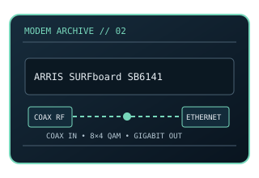

[ MODEL-SPECIFIC NETWORK HARDWARE ]
ARRIS SURFboard SB6141 DOCSIS 3.0 Cable Modem
8×4-channel DOCSIS 3.0 cable modem with one Gigabit Ethernet handoff. This static record documents the modem-side line technology separately from its host interface and provider-dependent service rate.

MODEL IDENTIFICATION: Match the exact model number and hardware revision on the device label. Similar names, regional SKUs and provider-branded variants may have different ports, firmware, modulation or driver support.
Exact specifications and compatibility
| Cataloged model | ARRIS SURFboard SB6141 DOCSIS 3.0 Cable Modem |
|---|---|
| Dedicated subcategory | Modems and line-termination devices |
| Modulation / line protocol | DOCSIS 3.0, 8 downstream × 4 upstream bonded channels; F-type coaxial RF input; bonded downstream 256-QAM and upstream QAM channels under DOCSIS 3.0. |
| Line / physical interfaces | F-type coaxial RF input; bonded downstream 256-QAM and upstream QAM channels under DOCSIS 3.0. |
| Nominal data rate | Nominal maximums are 343 Mb/s downstream and 131 Mb/s upstream for 8×4 channel bonding; the actual ISP profile and RF conditions control service rate. |
| Bus / host interface | Coaxial cable line; 1 × 10/100/1000BASE-T RJ-45 host interface. |
| Operating-system compatibility | Ethernet host connection is driverless at the modem layer and works with a configured Ethernet/IP host or router. Cable provider must support and provision the exact device. |
| Driver / firmware notes | A provider can retire or reject older DOCSIS 3.0 equipment independent of its physical condition. Verify compatibility and support policy for the service address. |
| Wi-Fi / switching | No Wi-Fi access point or Ethernet switching function is cataloged for this modem. |
Model-specific notes
A provider can retire or reject older DOCSIS 3.0 equipment independent of its physical condition. Verify compatibility and support policy for the service address. Nominal signaling rates are standards/model ceilings rather than specimen test results or a promise of ISP throughput.
Manufacturer, archive and standards references
- Internet Archive catalog copy of the SB6141 user guideArchived model-specific guide or software documentation for identification and legacy host details.
- SURFboard manufacturer support portalManufacturer source; confirm regional SKU, revision and present support status. Original page is gone; this is the Internet Archive’s copy.
- CableLabs — DOCSIS 3.0 technology referenceStandards reference for the relevant line/modem signaling family; implementation and ISP profile remain model-specific.
Check manufacturer and provider support for the exact region, revision, line profile, firmware and host OS before deployment.